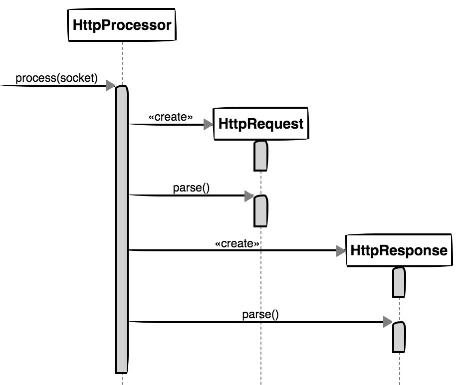
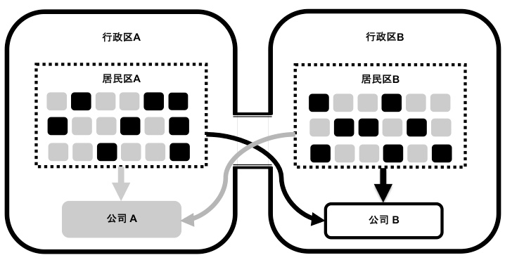
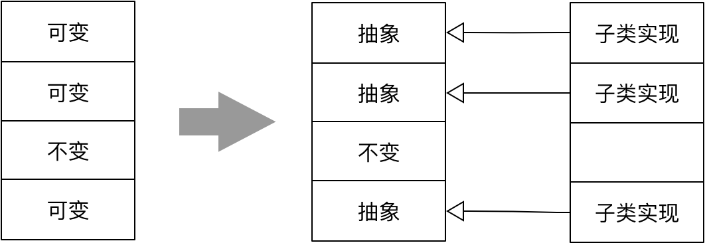
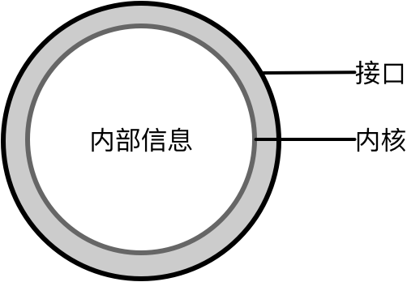

- 001 「战略篇」访谈 DDD 和微服务是什么关系？.md.html
- 002 「战略篇」开篇词：领域驱动设计，重焕青春的设计经典.md.html
- 003 领域驱动设计概览.md.html
- 004 深入分析软件的复杂度.md.html
- 005 控制软件复杂度的原则.md.html
- 006 领域驱动设计对软件复杂度的应对（上）.md.html
- 007 领域驱动设计对软件复杂度的应对（下）.md.html
- 008 软件开发团队的沟通与协作.md.html
- 009 运用领域场景分析提炼领域知识（上）.md.html
- 010 运用领域场景分析提炼领域知识（下）.md.html
- 011 建立统一语言.md.html
- 012 理解限界上下文.md.html
- 013 限界上下文的控制力（上）.md.html
- 014 限界上下文的控制力（下）.md.html
- 015 识别限界上下文（上）.md.html
- 016 识别限界上下文（下）.md.html
- 017 理解上下文映射.md.html
- 018 上下文映射的团队协作模式.md.html
- 019 上下文映射的通信集成模式.md.html
- 020 辨别限界上下文的协作关系（上）.md.html
- 021 辨别限界上下文的协作关系（下）.md.html
- 022 认识分层架构.md.html
- 023 分层架构的演化.md.html
- 024 领域驱动架构的演进.md.html
- 025 案例 层次的职责与协作关系（图文篇）.md.html
- 026 限界上下文与架构.md.html
- 027 限界上下文对架构的影响.md.html
- 028 领域驱动设计的代码模型.md.html
- 029 代码模型的架构决策.md.html
- 030 实践 先启阶段的需求分析.md.html
- 031 实践 先启阶段的领域场景分析（上）.md.html
- 032 实践 先启阶段的领域场景分析（下）.md.html
- 033 实践 识别限界上下文.md.html
- 034 实践 确定限界上下文的协作关系.md.html
- 035 实践 EAS 的整体架构.md.html
- 036 「战术篇」访谈：DDD 能帮开发团队提高设计水平吗？.md.html
- 037 「战术篇」开篇词：领域驱动设计的不确定性.md.html
- 038 什么是模型.md.html
- 039 数据分析模型.md.html
- 040 数据设计模型.md.html
- 041 数据模型与对象模型.md.html
- 042 数据实现模型.md.html
- 043 案例 培训管理系统.md.html
- 044 服务资源模型.md.html
- 045 服务行为模型.md.html
- 046 服务设计模型.md.html
- 047 领域模型驱动设计.md.html
- 048 领域实现模型.md.html
- 049 理解领域模型.md.html
- 050 领域模型与结构范式.md.html
- 051 领域模型与对象范式（上）.md.html
- 052 领域模型与对象范式（中）.md.html
- 053 领域模型与对象范式（下）.md.html
- 054 领域模型与函数范式.md.html
- 055 领域驱动分层架构与对象模型.md.html
- 056 统一语言与领域分析模型.md.html
- 057 精炼领域分析模型.md.html
- 058 彩色 UML 与彩色建模.md.html
- 059 四色建模法.md.html
- 060 案例 订单核心流程的四色建模.md.html
- 061 事件风暴与业务全景探索.md.html
- 062 事件风暴与领域分析建模.md.html
- 063 案例 订单核心流程的事件风暴.md.html
- 064 表达领域设计模型.md.html
- 065 实体.md.html
- 066 值对象.md.html
- 067 对象图与聚合.md.html
- 068 聚合设计原则.md.html
- 069 聚合之间的关系.md.html
- 070 聚合的设计过程.md.html
- 071 案例 培训领域模型的聚合设计.md.html
- 072 领域模型对象的生命周期-工厂.md.html
- 073 领域模型对象的生命周期-资源库.md.html
- 074 领域服务.md.html
- 075 案例 领域设计模型的价值.md.html
- 076 应用服务.md.html
- 077 场景的设计驱动力.md.html
- 078 案例 薪资管理系统的场景驱动设计.md.html
- 079 场景驱动设计与 DCI 模式.md.html
- 080 领域事件.md.html
- 081 发布者—订阅者模式.md.html
- 082 事件溯源模式.md.html
- 083 测试优先的领域实现建模.md.html
- 084 深入理解简单设计.md.html
- 085 案例 薪资管理系统的测试驱动开发（上）.md.html
- 086 案例 薪资管理系统的测试驱动开发（下）.md.html
- 087 对象关系映射（上）.md.html
- 088 对象关系映射（下）.md.html
- 089 领域模型与数据模型.md.html
- 090 领域驱动设计对持久化的影响.md.html
- 091 领域驱动设计体系.md.html
- 092 子领域与限界上下文.md.html
- 093 限界上下文的边界与协作.md.html
- 094 限界上下文之间的分布式通信.md.html
- 095 命令查询职责分离.md.html
- 096 分布式柔性事务.md.html
- 097 设计概念的统一语言.md.html
- 098 模型对象.md.html
- 099 领域驱动设计参考过程模型.md.html
- 100 领域驱动设计的精髓.md.html
- 101 实践 员工上下文的领域建模.md.html
- 102 实践 考勤上下文的领域建模.md.html
- 103 实践 项目上下文的领域建模.md.html
- 104 实践 培训上下文的业务需求.md.html
- 105 实践 培训上下文的领域分析建模.md.html
- 106 实践 培训上下文的领域设计建模.md.html
- 107 实践 培训上下文的领域实现建模.md.html
- 108 实践 EAS 系统的代码模型.md.html
- 109 后记：如何学习领域驱动设计.md.html
051 领域模型与对象范式（上）
主流的领域驱动设计通常采用面向对象的编程范式，这种范式将领域中的任何概念都视之为“对象”。遵循面向对象的设计思想，社区的重要声音是避免设计出只有数据属性的贫血模型。贫血模型的坏处在介绍结构范式时我已做了详细阐释，这里不再赘述，而对象范式所要遵循的设计思想和原则并不止于此。若要把握面向对象设计的核心，我认为需要抓住职责与抽象这两个核心。
职责
之所以名为职责（Responsibility）而非行为或功能，是从角色拥有何种能力的角度做出的思考。职责是对象封装的判断依据：因为对象拥有了数据，即认为它掌握了某个领域的知识，从而具备完成某一功能的能力；因为该对象拥有了这一能力，故而在定义对象时，赋予了它参与业务场景并与其它对象产生协作时担任的角色。这就形成了角色、职责、协作的活动场景。因此，Rebbecca 认为职责主要包括以下三个方面：
- 对象持有的信息：即对象拥有的知识
- 对象执行的动作：即对象依据知识而具备的能力
- 能够影响到其他对象的决定：即对象与其他对象之间的协作
当我们将对象的行为看作职责时，就赋予了对象的生命与意识，使得我们能够以拟人的方式对待对象。一个聪明的对象是对象自己知道应该履行哪些职责，拒绝履行哪些职责，以及该如何与其他对象协作共同履行职责。这时的对象绝不是一个愚笨的数据提供者，它学会了如何根据自己拥有的数据来判断请求的响应方式、行为的执行方式，这就是所谓的对象的“自治”。
自治
我在《领域驱动战略设计实践》中提及了限界上下文的自治特性，事实上，从更小的粒度来看，对象仍然需要具备自治的这四个特性，即：
- 最小完备
- 自我履行
- 稳定空间
- 独立进化
最小完备
如何来理解对象的“最小完备”？John Kern 谈到对象的设计时，提到：
“不要试着把对象在现实世界中可以想象得到的行为都实现到设计中去。相反，只需要让对象能够合适于应用系统即可。对象能做的、所知的最好是一点不多一点不少。”
因此，对象的最小完备取决于该对象具备的知识，恰如其分地履行职责。不放弃该自己履行的职责，也不越权对别人的行为指手画脚。
最小完备是实现自治的基本条件。所谓“完备”，就是指对象的行为是完整的，无需针对自己的信息去求助别的对象，这就避免了不必要的依赖关系，并使得该完备对象具有了独立的意识。“最小完备”则进一步限制了完备的范围，防止对象履行的职责过多。一个对象一旦突破了“最小完备”的约束，就可能导致别的对象不具有“完备”的能力，因为职责总是非此即彼的。如果将本该分配给 A 对象的行为错误地分配给了 B，当 A 需要这些行为时，只得去求助于 B，导致了 A 与 B 不必要的耦合。
判断一个对象是否具有“完备性”，可以基于如下判断标准：
- 基于对象拥有的信息：即处理信息的行为应优先考虑分配给拥有该信息的对象。
- 双生的行为动词是否分离：双生的行为动词是内聚的职责，如 withdraw 与 deposite、open 与 close、add 与 remove 等，这些行为不可分离。
例如，我们需要设计一个 Web 服务器，它提供了一个对象 HttpProcessor，能够对传递过来的 HTTP 请求进行处理。由于请求消息为 Socket 消息，我们无法修改该类的定义，因此，Socket 消息仅仅作为要处理的信息交由 HttpProcessor 进行解析，并定义 process(socket) 方法来解析请求头和请求体。解析后的这些信息正是 Servlet 需要的。
但是，涉及一些系统开销大的字符串操作或其他操作却是 Servlet 当前不需要的。如果仍然将这些开销大的解析操作分配给 HttpProcessor，就存在职责分配不当，因为 HttpProcessor 的职责是快速响应请求，不应该将时间浪费在解析大量目前并不需要的请求消息上。我们认为这些待解析的信息属于 HttpRequest 与 HttpResponse 的一部分。这时，HttpProcessor 的职责就变为创建 HttpRequest 与 HttpResponse 对象，并将这些请求信息直接赋值给它们，这就使得 HttpRequest 与 HttpResponse 分别拥有了部分请求信息。要保证 HttpRequest 与 HttpResponse 对象的完备能力，就应该将解析这些请求信息的职责交给它们自己来完成：

遵循最小完备原则，使得 HttpProcessor、HttpRequest 与 HttpResponse 三者之间的权责变得更加清晰。同时，这一设计还提高了 HttpProcessor 处理 HTTP 请求的能力。由于解析开销较大的字符串操作并未由 HttpProcessor 承担，而是将这些数据流塞给了 HttpRequest 与 HttpResponse，使得 HttpProcessor 的 process() 操作可以快速完成。当请求者真正需要相关请求信息时，就可以调用 HttpRequest 与 HttpResponse 对象的 parse() 方法。
判断一个对象是否具有“最小特征”，可以基于如下判断标准：
- 行为的特征是否保持一致：定义在一个类中的方法，其名称定义是发散的，或者类的字段只与一部分方法有关，另外的字段与另外一部分方法有关，皆可认为该对象的行为特征并不一致。
- 基于变化点：如果存在两个或两个以上的变化点，则说明对象承担了多余的职责。
遵循“单一职责原则”，每个对象的职责最好是单一的，也就是要满足这里提及的“最小特征”。在一个商业智能产品中，ViewTile 是一个 React 组件，作为报表视图的一个小挂件。既然是一个 UI 组件，它履行的主要职责就应该是对界面元素的呈现：
export default class ViewTile extends React.Component {
render() {
const { selected, isEdit } = this.props
return (
<div
className={classNames('ViewTile', {selected, editing: isEdit})}
onClick={this.handleClickView}
>
{this.renderActions()}
{this.renderDrillPath()}
{this.renderCascadeFilterCondition()}
<div className='Chart' style={this.getChartStyle()}>
{this.renderChart()}
</div>
{this.renderReportViewDataModal()}
</div>
)
}
}
该组件需要提供一个将报表视图导出为 PNG、Excel 和 PDF 的功能。考虑到这些导出功能目前仅限于被 ViewTile 调用，开发人员就在该组件类中直接定义和实现了导出行为：
class ViewTile extends React.Component {
handleGetDownLoadSelectedExportFile(e, exportType) {
const exportPng = (charType) => { // 实现内容略 }
const exportPDF = (dom, charType) => { // 实现内容略 }
const exportExcel = (dom) => { // 实现内容略 }
this.handleControlExportTypeBox(e)
switch (exportType) {
case 'PNG':
exportPng(type)
break
case 'PDF':
exportPDF(this.willExportedChartInstance, type)
break
case 'Excel':
exportExcel(this.willExportedChartInstance)
break
}
}
}
exportPng()、exportExcel() 与 exportPdf() 三个函数使用到的信息与 render() 函数迥然不同，虽然看起来它们应该作为私有方法被 ViewTile 内部代码调用，但从“最小特征”的角度讲，这三个函数的职责不应该由 ViewTile 来承担，应该将它们分配到 FileExporter。
自我履行
一个最小完备的对象通常都能够保证自我履行，如果一个对象做到了自我履行，就说明了它具有最小完备特征，因此，最小完备与自我履行这两个特征其实是相辅相成的。
所谓“自我履行”，就是对象利用自己的属性完成自己的任务，不需要假手他人。这就要求一个对象应该将数据和对数据的操作行为包装在一起，这其实是对象设计技术的核心特征。这一核心特征又可以称之为“信息专家模式”，即信息的持有者就是操作该信息的专家。只有专业的事情交给专业的对象去做，对象的世界才能做到各司其职、各尽其责。
违背了“信息专家模式”的对象，往往会让我们嗅到“依恋情结（Feature Envy）”的坏味道。Martin Fowler 认为这种经典气味是：
“函数对某个类的兴趣高过对自己所处类的兴趣。这种孺慕之情最通常的焦点便是数据。”
自我履行与依恋情结的特征相同，只是立场不同。依恋情结是指在一个对象的行为中，总是使用别的对象的数据和特性，就好像是羡慕别人拥有的好东西似的。自我履行指的是我守住自己的一亩三分地，该自己操作的数据绝不轻易交给别人。
例如在一个报表系统中，需要根据客户的 Web 请求参数作为条件动态生成报表。这些请求参数根据其数据结构的不同划分为三种：
- 单一参数（SimpleParameter）：代表 key 和 value 的一对一关系
- 元素项参数（ItemParameter）：一个参数包含多个元素项，每个元素项又包含 key 和 value 的一对一关系
- 表参数（TableParameter）：参数的结构形成一张表，包含行头、列头和数据单元格
这些参数都实现了 Parameter 接口，该接口的定义为：
public interface Parameter {
String getName();
}
public class SimpleParameter implements Parameter {}
public class ItemParameter implements Parameter {}
public class TableParameter implements Parameter {}
在报表的元数据中已经配置了各种参数，包括它们的类型信息。服务端在接收到 Web 请求时，通过 ParameterGraph 加载配置文件，并利用反射创建各自的参数对象。此时，ParameterGraph 拥有的参数都没有值，需要通过 ParameterController 从 ServletHttpRequest 获得参数值对各个参数进行填充。代码如下：
public class ParameterController {
public void fillParameters(ServletHttpRequest request, ParameterGraph parameterGraph) {
for (Parameter para : parameterGraph.getParmaeters()) {
if (para instanceof SimpleParameter) {
SimpleParameter simplePara = (SimpleParameter) para;
String[] values = request.getParameterValues(simplePara.getName());
simplePara.setValue(values);
} else {
if (para instanceof ItemParameter) {
ItemParameter itemPara = (ItemParameter) para;
for (Item item : itemPara.getItems()) {
String[] values = request.getParameterValues(item.getName());
item.setValues(values);
}
} else {
TableParameter tablePara = (TableParameter) para;
String[] rows =
request.getParameterValues(tablePara.getRowName());
String[] columns =
request.getParameterValues(tablePara.getColumnName());
String[] dataCells =
request.getParameterValues(tablePara.getDataCellName());
int columnSize = columns.length;
for (int i = 0; i < rows.length; i++) {
for (int j = 0; j < columns.length; j++) {
TableParameterElement element = new TableParameterElement();
element.setRow(rows[i]);
element.setColumn(columns[j]);
element.setDataCell(dataCells[columnSize * i + j]);
tablePara.addElement(element);
}
}
}
}
}
}
}
显然，这三种参数对象没有能够做到自我履行，它们把自己的数据“屈辱”地交给了 ParameterController，却没有想到自己拥有填充参数数据的能力，毕竟只有它们自己才最清楚各自参数的数据结构。如果让这些参数对象变为能够自我履行的自治对象，Do it myself，情况就完全不同了：
public class SimpleParameter implements Parameter {
public void fill(ServletHttpRequest request) {
String[] values = request.getParameterValues(this.getName());
this.setValue(values);
}
}
public class ItemParameter implements Parameter {
public void fill(ServletHttpRequest request) {
ItemParameter itemPara = this;
for (Item item : itemPara.getItems()) {
String[] values = request.getParameterValues(item.getName());
item.setValues(values);
}
}
}
// TableParameter 的实现略去
当参数自身履行了填充参数的职责时，ParameterController 履行的职责就变得简单了：
public class ParameterController {
public void fillParameters(ServletHttpRequest request, ParameterGraph parameterGraph) {
for (Parameter para : parameterGraph.getParmaeters()) {
if (para instanceof SimpleParameter) {
((SimpleParameter) para).fill(request);
} else {
if (para instanceof ItemParameter) {
((ItemParameter) para).fill(request);
} else {
((TableParameter) para).fill(request);
}
}
}
}
}
各种参数的数据结构不同，导致了填充行为存在差异，但从抽象层面看，都是将一个 ServletHttpRequest 填充到 Parameter 中。于是可以将 fill() 方法提升到 Parameter 接口，形成三种参数类型对于 Parameter 接口的多态：
public class ParameterController {
public void fillParameters(ServletHttpRequest request, ParameterGraph parameterGraph) {
for (Parameter para : parameterGraph.getParmaeters()) {
para.fill(request);
}
}
}
当一个对象能够自我履行时，就可以让调用者仅仅需要关注对象能够做什么（What to do），而不需要操心其实现细节（How to do），从而将实现细节隐藏起来。由于各种参数对象自身履行了填充职责，ParameterController 就可以只关注抽象 Parameter 提供的公开接口，而无需考虑实现，对象之间的协作就变得更加松散耦合，对象的多态能力才能得到充分地体现。
稳定空间
一个自治的对象具有稳定空间，使其具备抵抗外部变化的能力。要做到这一点，就需要处理好外部对象与自治对象之间的依赖关系。方法就是遵循“高内聚松耦合”原则来划分对象的边界。这就好比两个行政区，各自拥有一个居民区和一家公司。居民区 A 的一部分人要跨行政区到公司 B 上班，同理，居民区 B 的一部分人也要跨行政区到公司 A 上班：

这两个行政区是紧耦合的，因为居民区与公司之间的关系只是一种松散随意的划分。现在我们按照居民区与公司之间的关系，对居民区的人重新调整，就得到了两个完全隔离的行政区：
调整后的系统并没有改变任何本质性的事情。所有的人都还在原来的公司上班，没有人失业；没有人流离失所，只是改变了居住地。但仅仅由于居民居住区域的改变，两个行政区的依赖关系就大为减弱。事实上，对于这个理想模型，两个行政区之间已经没有任何关系，它们之间的桥梁完全可以拆除。这就是“高内聚松耦合”原则的体现，通过将关联程度更高的元素控制在一个单位内部，就可以达到降低单位间关联的目的。
注意：本案例及案例的说明来自 ThoughtWorks 的 OO BootCamp 讲义。
高内聚原则与职责的分配有关，如果职责分配合理，就能减少许多不必要产生的依赖；松耦合原则与职责的变化有关，如果能对这种变化进行抽象与隔离，就能降低二者之间的依赖程度。因此，要实现自治对象的稳定空间，还需要识别变化点，对变化的职责进行分离和封装。实际上，许多设计模式都可以说是“分离和封装变化”原则的体现。
当我们发现一个对象包含的职责既有不变的部分，又有可变的部分，就可以将可变的部分分离出去，将其抽象为一个接口，再以委派的形式传入到原对象，如下图所示：
此时抽象出来的接口 Changable 其实就是策略模式（Strategy Pattern）或者命令模式（Command Pattern）的体现。例如，Java 线程的实现机制是不变的，但运行在线程中的业务却随时可变，将这部分可变的业务部分分离出来，抽象为 Runnable 接口，再以构造函数参数的方式传入到 Thread 中：
public class Thread ... {
private Runnable target;
public Thread(Runnable target) {
init(null, target, "Thread-" + nextThreadNum(), 0);
}
public void run() {
if (target != null) {
target.run();
}
}
}
模板方法模式（Template Method Pattern）同样分离了变与不变，只是分离变化的方向是向上提取为抽象类的抽象方法而已：

例如，授权认证功能的主体是对认证信息 token 进行处理完成认证。如果通过认证，则返回认证结果；认证无法通过，就会抛出 AuthenticationException 异常。整个认证功能的执行步骤是不变的，但对 token 的处理需要根据认证机制的不同提供不同实现，甚至允许用户自定义认证机制。为了满足属于部分功能的认证机制的变化，可以对这部分可变的内容进行抽象。AbstractAuthenticationManager 是一个抽象类，定义了 authenticate() 模板方法：
public abstract class AbstractAuthenticationManager {
// 模板方法，它是稳定不变的
public final Authentication authenticate(Authentication authRequest)
throws AuthenticationException {
try {
Authentication authResult = doAuthentication(authRequest);
copyDetails(authRequest, authResult);
return authResult;
} catch (AuthenticationException e) {
e.setAuthentication(authRequest);
throw e;
}
}
private void copyDetails(Authentication source, Authentication dest) {
if ((dest instanceof AbstractAuthenticationToken) && (dest.getDetails() == null)) {
AbstractAuthenticationToken token = (AbstractAuthenticationToken) dest;
token.setDetails(source.getDetails());
}
}
// 基本方法，定义为抽象方法，具体实现交给子类
protected abstract Authentication doAuthentication(Authentication authentication)
throws AuthenticationException;
}
该模板方法调用的 doAuthentication() 是一个受保护的抽象方法，没有任何实现。这就是可变的部分，交由子类实现，如 ProviderManager 子类：
public class ProviderManager extends AbstractAuthenticationManager {
// 实现了自己的认证机制
public Authentication doAuthentication(Authentication authentication)
throws AuthenticationException {
Class toTest = authentication.getClass();
AuthenticationException lastException = null;
for (AuthenticationProvider provider : providers) {
if (provider.supports(toTest)) {
logger.debug("Authentication attempt using " + provider.getClass().getName());
Authentication result = null;
try {
result = provider.authenticate(authentication);
sessionController.checkAuthenticationAllowed(result);
} catch (AuthenticationException ae) {
lastException = ae;
result = null;
}
if (result != null) {
sessionController.registerSuccessfulAuthentication(result);
applicationEventPublisher.publishEvent(new AuthenticationSuccessEvent(result));
return result;
}
}
}
throw lastException;
}
}
如果一个对象存在两个可能变化的职责，就违背了“单一职责原则”，即“引起变化的原因只能有一个”。我们需要分离这两个可变的职责，分别进行抽象，然后形成这两个抽象职责的组合，就是桥接模式（Bridge Pattern）的体现：
例如在实现数据权限控制时，需要根据解析配置内容获得数据权限规则，然后再根据解析后的规则对数据进行过滤。需要支持多种解析规则，同时也需要支持多种过滤规则，二者的变化方向是完全不同的。这时，就不能像下面这样将它们定义到一个类或接口中：
public interface DataRuleParser {
List<DataRule> parseRules();
T List<T> filterData(List<T> srcData);
}
正确的做法是分离规则解析与数据过滤职责，分别定义到两个独立接口。数据权限控制的过滤数据功能才是实现数据权限的目标，因此在实现中，应以数据过滤职责为主，再通过依赖注入的方式将规则解析器传入：
public interface DataFilter<T> {
List<T> filterData(List<T> srcData);
}
public interface DataRuleParser {
List<DataRule> parseRules();
}
public class GradeDataFilter<Grade> implements DataFilter {
private DataRuleParser ruleParser;
// 注入一个抽象的 DataRuleParser 接口
public GradeDataFilter(DataRuleParser ruleParser) {
this.ruleParser = ruleParser;
}
@Override
public List<Grade> filterData(List<Grade> sourceData) {
if (sourcData == null || sourceData.isEmpty() {
return Collections.emptyList();
}
List<Grade> gradeResult = new ArrayList<>(sourceData.size());
for (Grade grade : sourceData) {
for (DataRule rule : ruleParser.parseRules()) {
if (rule.matches(grade) {
gradeResult.add(grade);
}
}
}
return gradeResult;
}
}
GradeDataFilter 是过滤规则的一种，它在过滤数据时选择什么解析模式，取决于通过构造函数参数传入的 DataRuleParser 接口的具体实现类型。无论解析规则怎么变，只要不修改接口定义，就不会影响到 GradeDataFilter 的实现。
独立进化
稳定空间针对的是外部变化对自治对象产生的影响，独立进化关注的则是自治对象自身变化对外部产生的影响。二者是开放封闭原则（Open-closed Principle）的两面：若能做到对扩展开放，当变化发生时，自治对象就不会受到变化的影响，因为通过抽象可以很容易对实现进行扩展或替换；若能做到对修改封闭，只要对外公开的接口没有变化，封装在内部的实现怎么变化，都不会影响到它的调用者。这就将一个自治对象分为了内外两个世界：
- 合理的封装是包裹在自治对象上的一层保护膜
- 对外公开的接口是自治对象与外部世界协作的唯一通道
注意，这里的“接口”并非语法意义上的 Interface，而是指代一种“交互”，可以是定义的类型或方法，即一切暴露在外面的信息，如下图所示：

要做到独立进化，就是要保证自治对象的接口不变，这样才不会影响外部的调用者；做好了这一层保护，位于内核部分的内部信息就可以随意调整了。
如何才能做到对内核的保护呢？其一是保证接口的稳定性，即避免对公开方法的参数和返回值的修改。假设我们定义一个连接 FTP 服务器的接口，若采用如下形式：
public interface FtpConnector {
void connect(String ftpHost, int port, String userName, String password);
}
倘若将来需要为连接功能增加一个新属性：服务器主路径 homePath。要应对这个变化，就需要修改 connect() 方法的定义，又或者新增加一个重载的方法。如果要确保接口的稳定，应尽量将一组内聚的参数封装为对象，只要对象类型没有变化，即使增加了新的属性和行为，也不会影响到已有的消费者。例如通过引入 FtpServer 类对 FTP 地址、端口、用户名和密码这几个内聚的概念进行封装，接口就可以调整为：
public class FtpServer {
private Stirng host;
private int port;
private String userName;
private String password
}
public interface FtpConnector {
void connect(FtpServer ftpServer);
}
即使需要修改 FtpServer 的定义添加新的 homePath 属性，connect(ftpServer) 接口的定义也不需要做任何调整。
数据结构和数据类型也需要进行合理的封装。我们必须认识到在调用端与实现端在重复性上的区别。遵循 DRY（Don't Repeat Yourself）原则，任何功能的实现应该只有一份，但对该功能的调用却会出现多份。这也正是在定义一个类时，为何需要为字段提供访问方法的原因。如果公有类暴露了它的数据字段，要想在将来改变字段的访问方式就非常困难，因为该字段的调用方法已经遍布各处，修改成本非常大。
工厂方法实则也体现了这一区别，即创建的实现逻辑只有一份，但创建对象的调用代码却可能分布在多处。假设创建对象的逻辑非常复杂，如果没有工厂方法对创建逻辑进行封装，就会导致大量重复的创建代码；一旦创建对象的逻辑发生变化，由于重复代码的缘故，就需要修改多处。
例如 Java JDK 中 EnumSet 对象的创建逻辑就比较复杂。因为要考虑创建对象的性能，JDK 通过判断底层枚举类型的大小，来决定返回 RegularEnumSet 或 JumboEnumSet 实例，二者都是 EnumSet 的子类。JDK 的实现是提供了创建 EnumSet 的工厂方法：
public abstract class EnumSet<E extends Enum<E>> ... {
public static <E extends Enum<E>> EnumSet<E> noneOf(Class<E> elementType) {
Enum<?>[] universe = getUniverse(elementType);
if (universe == null)
throw new ClassCastException(elementType + " not an enum");
if (universe.length <= 64)
return new RegularEnumSet<>(elementType, universe);
else
return new JumboEnumSet<>(elementType, universe);
}
class RegularEnumSet<E extends Enum<E>> extends EnumSet<E> { }
class JumboEnumSet<E extends Enum<E>> extends EnumSet<E> { }
}
《Effective Java》在讲解这个案例时，认为：
“这两个实现类的存在对于客户端来说是不可见的。如果 RegularEnumSet 不能再给小的枚举类型提供性能优势，就可能从未来的发行版本中删除，不会造成不良的影响。同样地，如果事实证明对性能有好处，也可能在未来的发行版本中添加第三甚至第四个 EnumSet 实现。客户端永远不知道也不关心他们从工厂方法中得到的对象的类；他们只关心它是 EnumSet 的某个子类即可。”
显然，工厂方法的封装使得调用者不受创建逻辑变化的影响，从这个角度来讲，EnumSet 就是可以独立进化的。
倘若数据的类型在未来可能发生变化，也可以引入封装进行内外隔离，使得数据类型支持独立进化。例如在一个 BI 产品中，诸如 DataSource、DataSet、Field、Report、Dashboard、View 等元数据都有其唯一标识。这些元数据信息存储在 MySQL 中，唯一标识采用了数据库的自增长 ID。在 Scala 实现代码中，这些元数据的唯一标识都被定义为 Int 类型。在实现时，我们并没有直接使用 Int 类型来声明唯一标识属性，而是利用了 Scala 语言的特性，通过 type 关键字定义了具有唯一标识语义的类型 ID，如：
object Types {
type ID = Int
}
需要使用唯一标识时，我们使用了 ID 而非 Int 类型，例如操作数据集的方法：
object DataSets extends JsonWriter {
def dataSet(dataSetId: ID): Option[DataSet] = DataSet.find(dataSetId)
def directoryIds(dataSetId: ID)(implicit session: DBSession): List[ID] = {
Directories.directoryIds(dataSetId, DirectoryType.DataSet)
}
}
最初看来，这一设计不过是封装原则的体现，并未刻意考虑对未来变化的隔离。然而不曾想到，后来客户希望产品能够支持元数据迁移的功能。由于之前的设计使用了数据库的自增长标识，这就意味着该标识仅能在当前数据库中保持唯一性，一旦元数据迁移到了另外一个环境，就可能引起唯一标识的冲突。
为了避免这一冲突，我们决定将所有元数据的唯一标识类型修改为 UUID 类型，数据列类型定义为 varchar(36)。由于我们事先定义了 ID 类型，有效地隔离了变化。我们只需要调整它的定义：
object Types {
type ID = UUID
}
所有 ID 的调用代码都不受到任何影响。在数据库层面，只需要修改数据库脚本，并重新生成采用 UUID 为唯一标识的元数据模型对象即可。